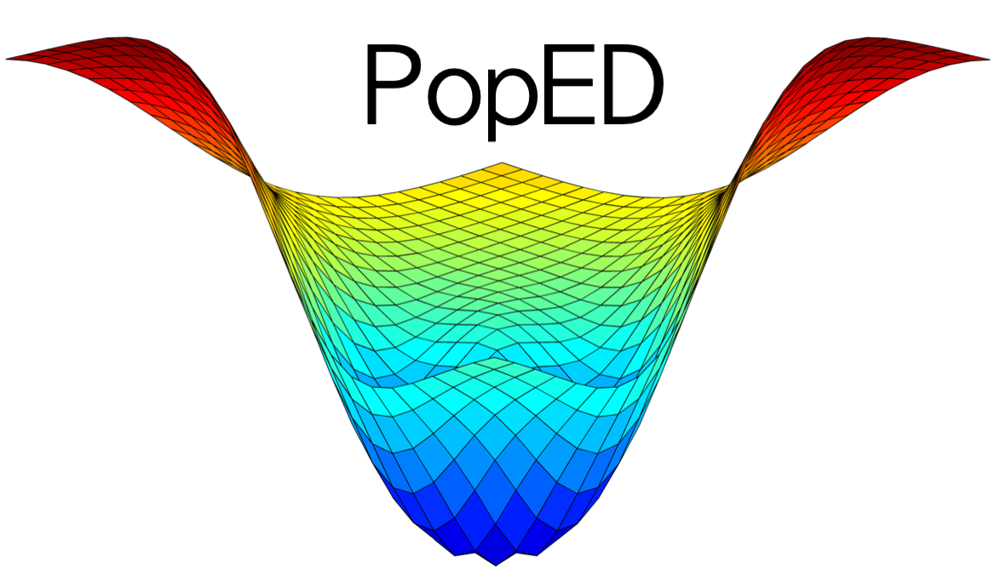
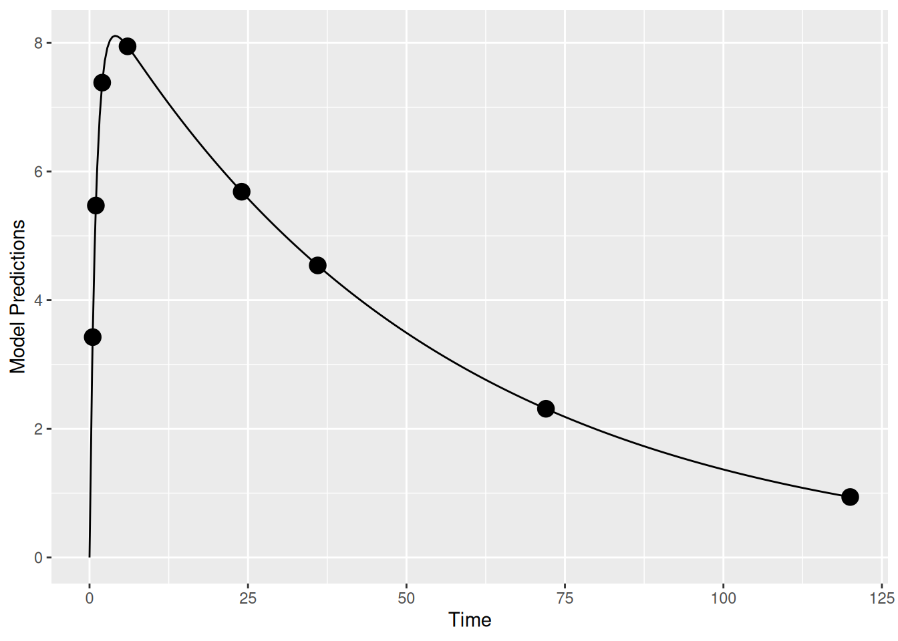
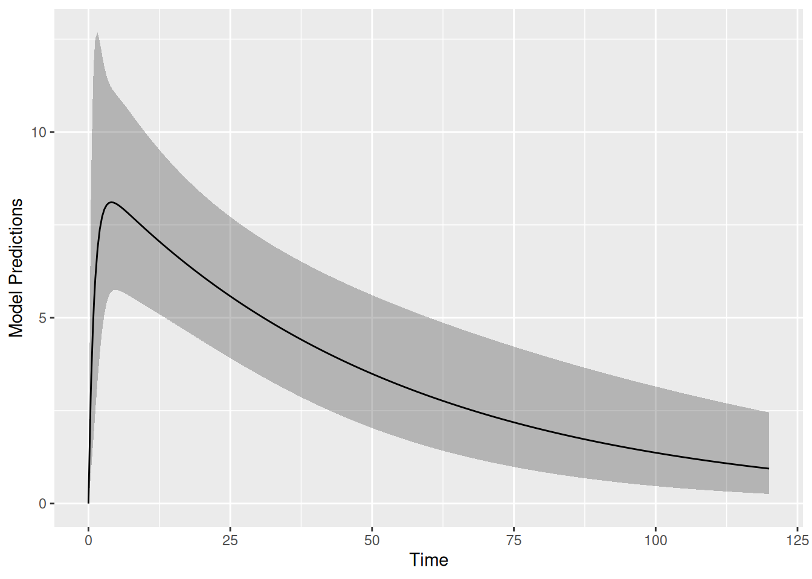
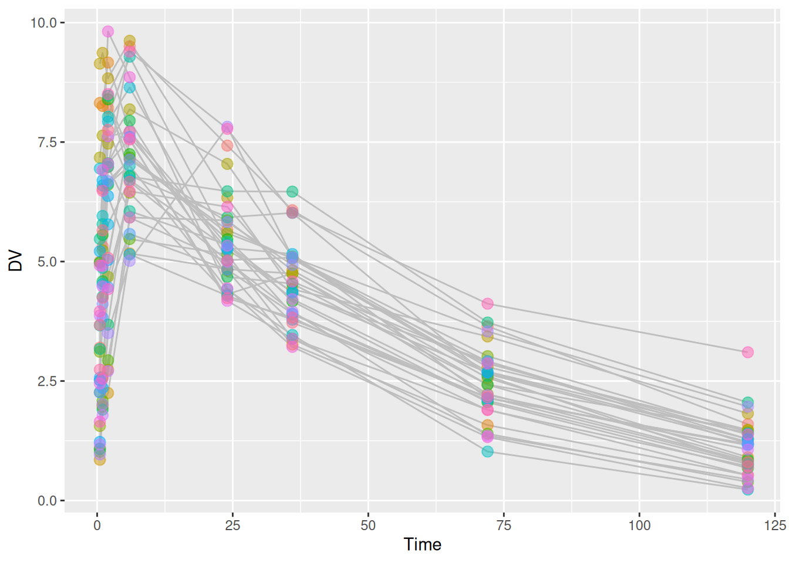
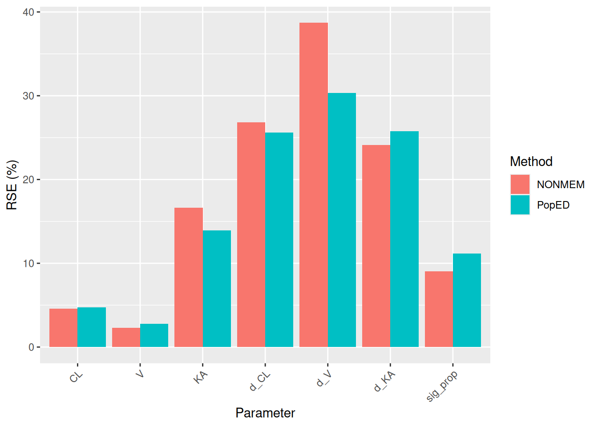

Compare Uncertainty Predictions from PopED with NONMEM
2026-04-28
Source:vignettes/articles/compare_poped_with_nonmem.qmd
1 Introduction
Before running a clinical study, it is useful to know how precisely the model parameters can be estimated from the planned design. PopED answers that question by inverting the Fisher Information Matrix (FIM) for the design, producing predicted parameter RSE without any data. This article checks those predictions against what NONMEM reports from $COVARIANCE after fitting the same model to one simulated dataset, using the Warfarin example from Nyberg et al. (2015). We find that the two agree closely, with PopED slightly lower, on average. This is consistent with the FIM giving a Cramér-Rao lower bound and a single NONMEM fit reflecting just one realization of the data.
2 Population models
In this work we are using population, or nonlinear mixed-effect (NLME) models. Here we define for the observation of the individual in a population as:
Where are the measurement times is a vector of covariates (doses of a drug, weight, age, concentration of a drug in blood plasma, etc.), is a vector of model parameter values, is a model for the residual error (also referred to as residual unexplained variability, or RUV) in the model and is a vector of random variables describing data-level deviations from the model. Often, as is the case in the models described here, the elements of are assumed to come from normal distributions with means of zero and a covariance matrix of (elements of ), where is typically diagonal.
Population effects are modeled on the parameter level, where individual parameter values are derived from typical (or population) parameters , individual deviations due to covariates , and random individual deviations (referred to as a between-subject variability, or BSV, term).
Extensions, where deviations are on other scales, are possible as well (such as parameter deviations between occasions within an individual’s study, center level deviations, study level deviations, etc.). Often, as is the case in the models described here, the elements of are assumed to come from normal distributions with means of zero and a covariance matrix of (elements of ).
3 Simple Population PK model in PopED
3.1 Structural model
Here we define a one-compartment pharmacokinetic model with linear absorption and a single drug dose using an analytical solution.
Where is the dose of drug given to individual , is the bioavailability, is the absorption rate constant for individual , is the volume of distribution for individual , and is the clearance for individual .
Defining this in PopED we have:
3.2 Random effects model
Taking the random effect structure and parameter values from the Warfarin example from software comparison in Nyberg et al., “Methods and software tools for design evaluation for population pharmacokinetics-pharmacodynamics studies”, Br. J. Clin. Pharm., 2014 (Nyberg et al. 2015), we have a proportional residual error model, with a coefficient of variation of 10%, and exponential random effects are assumed for CL, V and Ka.
This is defined in PopED with the following:
## -- parameter definition function
sfg <- function(x,a,bpop,b,bocc){
parameters=c(CL=bpop[1]*exp(b[1]),
V=bpop[2]*exp(b[2]),
KA=bpop[3]*exp(b[3]),
Favail=bpop[4],
DOSE=a[1])
return(parameters)
}
## -- Residual Error function
feps <- function(model_switch,xt,parameters,epsi,poped.db){
y <- do.call(poped.db$model$ff_pointer,list(model_switch,xt,parameters,poped.db))[[1]]
y = y*(1+epsi[,1])
return(list(y=y,poped.db=poped.db))
}3.3 Parameter values and study design
We create a poped database to link the model defined above with a set of model parameters, the initial design and a design space for optimization.
In this example, the parameter values are defined for the fixed effects (bpop), the between-subject variability variances (d) and the residual variability variances (sigma). We also fix the parameter Favail using notfixed_bpop, since we have only oral dosing and the parameter is not identifiable. Fixing a parameter means that we assume the parameter will not be estimated (and is known without uncertainty).
For the initial design, we define 1 group (m=1) of 32 individuals (groupsize=32), with a single dose of 70 mg (a). The initial design has 8 sample times per individual (xt).
For the design space, which can be searched during design optimization, we define a potential dose range of between 0 and 100 mg (mina and maxa), and a range of potential sample times between 0 and 120 hours (minxt and maxxt).
## -- Define initial design and design space
poped.db <-
create.poped.database(
# Model
ff_fun = ff,
fg_fun = sfg,
fError_fun = feps,
# Parameters
bpop = c(CL=0.15, V=8, KA=1.0, Favail=1),
notfixed_bpop = c(1,1,1,0),
d = c(CL=0.07, V=0.02, KA=0.6),
sigma = c(prop=0.01),
# Design
groupsize = 32,
xt = c(0.5,1,2,6,24,36,72,120),
a = 70,
# Design space
minxt = 0,
maxxt = 120,
mina = 0,
maxa = 100)3.4 Design simulation
First it may make sense to check your model and design to make sure you get what you expect when simulating data. Here we plot the model typical values:
plot_model_prediction(poped.db, model_num_points = 300)
Next, we plot the expected prediction interval (by default a 95% PI) of the data taking into account the BSV and RUV using the option PI=TRUE. This option makes predictions based on first-order approximations to the model variance and a normality assumption of that variance. Better (and slower) computations are possible with the DV=T, IPRED=T and groupsize_sim = some large number options.
plot_model_prediction(poped.db,
PI=TRUE,
model_num_points = 300,
sample.times = FALSE)
We can get these predictions numerically as well:
dat <- model_prediction(poped.db,DV=TRUE)
head(dat,n=8);tail(dat,n=8) ID Time DV IPRED PRED Group Model a_i
1 1 0.5 4.3470706 4.4871432 3.4254357 1 1 70
2 1 1.0 6.9354158 6.5381440 5.4711041 1 1 70
3 1 2.0 7.2289142 7.8255245 7.3821834 1 1 70
4 1 6.0 7.8433729 7.5230426 7.9462805 1 1 70
5 1 24.0 4.7704277 4.9963083 5.6858561 1 1 70
6 1 36.0 3.3831460 3.8029098 4.5402483 1 1 70
7 1 72.0 1.8834851 1.6769357 2.3116966 1 1 70
8 1 120.0 0.6216558 0.5628382 0.9398657 1 1 70 ID Time DV IPRED PRED Group Model a_i
249 32 0.5 10.332921 8.487080 3.4254357 1 1 70
250 32 1.0 9.387750 8.477020 5.4711041 1 1 70
251 32 2.0 7.347085 8.361443 7.3821834 1 1 70
252 32 6.0 8.882205 7.913646 7.9462805 1 1 70
253 32 24.0 6.257901 6.177403 5.6858561 1 1 70
254 32 36.0 5.717171 5.237116 4.5402483 1 1 70
255 32 72.0 2.769390 3.191176 2.3116966 1 1 70
256 32 120.0 1.634981 1.648525 0.9398657 1 1 703.5 Design evaluation
Next, we evaluate the initial design
(ds1 <- evaluate_design(poped.db))$ofv
[1] 52.44799
$fim
CL V KA d_CL d_V d_KA
CL 19821.28445 -21.836551 -8.622140 0.000000e+00 0.000000 0.00000000
V -21.83655 20.656071 -1.807099 0.000000e+00 0.000000 0.00000000
KA -8.62214 -1.807099 51.729039 0.000000e+00 0.000000 0.00000000
d_CL 0.00000 0.000000 0.000000 3.107768e+03 10.728786 0.02613561
d_V 0.00000 0.000000 0.000000 1.072879e+01 27307.089308 3.26560786
d_KA 0.00000 0.000000 0.000000 2.613561e-02 3.265608 41.81083599
sig_prop 0.00000 0.000000 0.000000 5.215403e+02 11214.210707 71.08763902
sig_prop
CL 0.00000
V 0.00000
KA 0.00000
d_CL 521.54030
d_V 11214.21071
d_KA 71.08764
sig_prop 806176.95068
$rse
CL V KA d_CL d_V d_KA sig_prop
4.738266 2.756206 13.925829 25.627205 30.344316 25.777327 11.170784 We see that all parameters relative standard errors (rse above) in % are predicted to be relatively well estimated.
4 Evaluation of design in NONMEM
4.1 Create dataset
Now we create a dataset simulated from this model and design. File paths below are relative to the directory containing this .qmd file.
The simulated data look like this:
head(dat,20) ID Time DV AMT Group Model a_i
1 1 0.0 NA 70 1 1 70
2 1 0.5 3.198757 NA 1 1 70
3 1 1.0 5.319627 NA 1 1 70
4 1 2.0 6.977056 NA 1 1 70
5 1 6.0 9.502303 NA 1 1 70
6 1 24.0 7.424704 NA 1 1 70
7 1 36.0 6.072961 NA 1 1 70
8 1 72.0 3.646986 NA 1 1 70
9 1 120.0 1.595916 NA 1 1 70
10 2 0.0 NA 70 1 1 70
11 2 0.5 4.997493 NA 1 1 70
12 2 1.0 6.519595 NA 1 1 70
13 2 2.0 8.211107 NA 1 1 70
14 2 6.0 7.138961 NA 1 1 70
15 2 24.0 5.664554 NA 1 1 70
16 2 36.0 5.059473 NA 1 1 70
17 2 72.0 2.647690 NA 1 1 70
18 2 120.0 1.227866 NA 1 1 70
19 3 0.0 NA 70 1 1 70
20 3 0.5 8.317745 NA 1 1 70
p <- ggplot(dat,aes(x=Time,y=DV,group=ID)) +
geom_line(color="grey") +
geom_point(size=3,alpha=0.5,
aes(colour = ID) ) +
theme(legend.position = "none")
p
4.2 NONMEM evaluation
We create a NONMEM model file.
nm_mod <- paste(
"$PROBLEM
$INPUT ID TIME DV AMT GROUP MODEL DOSE
$DATA ../compare_poped_with_nonmem_data/warfarin.csv IGNORE=@
$SUBROUTINES ADVAN2 TRANS2
$PK
CL = THETA(1) * EXP(ETA(1))
VC = THETA(2) * EXP(ETA(2))
KA = THETA(3) * EXP(ETA(3))
V = VC
$ERROR
CONC = A(2)/VC
Y = CONC + CONC * EPS(1)
$ESTIMATION METHOD=COND INTERACTION MAXEVAL=9999 POSTHOC
$COVARIANCE
$THETA (0, 0.15) ; POP_CL
$THETA (0, 8) ; POP_VC
$THETA (0, 1) ; POP_KA
$OMEGA 0.07 ; IIV_CL
$OMEGA 0.02 ; IIV_VC
$OMEGA 0.6 ; IIV_KA
$SIGMA 0.01; RUV_PROP
$TABLE ID VC CL KA ETA(1) ETA(2) ETA(3) FILE=sdtab1 NOAPPEND NOPRINT
")
write_file(nm_mod,file="./compare_poped_with_nonmem_models/run1.mod")How to reproduce the NONMEM run
The NONMEM output files needed below (
run1.ext, etc.) are precomputed and shipped with this article in the PopED GitHub repository undervignettes/articles/compare_poped_with_nonmem_models/, so rendering this document does not require a NONMEM installation.To regenerate them yourself, run the following from the article directory (
vignettes/articles/) using PsN and a working NONMEM installation:# Estimate the model execute ./compare_poped_with_nonmem_models/run1.mod # Optional: print a parameter-estimate summary sumo ./compare_poped_with_nonmem_models/run1.lstAfter
executecompletes,run1.extwill be available alongsiderun1.modand the rest of the chunks below can be re-rendered without changes.
We define a small helper that extracts parameter RSE (%) from a NONMEM .ext file.
nonmem_rse <- function(ext_file) {
ext <- read_table(ext_file, skip = 1, show_col_types = FALSE)
est <- ext |> filter(ITERATION == -1000000000) |> select(-ITERATION, -OBJ)
se <- ext |> filter(ITERATION == -1000000001) |> select(-ITERATION, -OBJ)
rse <- abs(se) / abs(est) * 100
rse[, unlist(se) != 0, drop = FALSE]
rse[, unlist(est) != 0, drop = FALSE]
}
par_rse_nonmem <- nonmem_rse("./compare_poped_with_nonmem_models/run1.ext") |>
rename(
CL = THETA1,
V = THETA2,
KA = THETA3,
d_CL = `OMEGA(1,1)`,
d_V = `OMEGA(2,2)`,
d_KA = `OMEGA(3,3)`,
`sig_prop` = `SIGMA(1,1)`
) |>
relocate(`sig_prop`, .after = last_col())
round(par_rse_nonmem, 2) CL V KA d_CL d_V d_KA sig_prop
1 4.58 2.28 16.63 26.81 38.72 24.14 9.025 Compare PopED and NONMEM
We can compare between the prediction in PopED and the covariance matrix in NONMEM.
result <- rbind(par_rse_nonmem,ds1$rse)|>
mutate("Method"=c("NONMEM","PopED"),.before=CL)
result_table <- result |>
pivot_longer(-Method, names_to = "Parameter", values_to = "RSE") |>
pivot_wider(names_from = Method, values_from = RSE)
knitr::kable(result_table, digits = 2,
caption = "Predicted parameter RSE (%) from NONMEM and PopED.") | Parameter | NONMEM | PopED |
|---|---|---|
| CL | 4.58 | 4.74 |
| V | 2.28 | 2.76 |
| KA | 16.63 | 13.93 |
| d_CL | 26.81 | 25.63 |
| d_V | 38.72 | 30.34 |
| d_KA | 24.14 | 25.78 |
| sig_prop | 9.02 | 11.17 |
result |>
pivot_longer(-Method,names_to = "Parameter",values_to = "RSE") |>
ggplot(aes(x=Parameter,y=RSE,fill=Method)) +
geom_col(position = position_dodge()) +
labs(y = "RSE (%)") +
theme(axis.text.x = element_text(angle = 45, hjust = 1)) +
scale_x_discrete(limits = names(result[-1]))
6 Conclusions
The NONMEM and PopED results are similar, though they differ in how they are obtained:
-
NONMEM estimates RSE from the covariance matrix produced by
$COVARIANCEafter fitting the model to a single simulated dataset. The values therefore reflect the variability of one particular realization of the data. - PopED computes RSE by inverting the Fisher Information Matrix evaluated from the design and assumed model and parameter values. The RSE values therefore reflect the expected uncertainty across all realizations of the data, before any data are collected.
- Because the FIM gives the Cramér-Rao lower bound on the variance of any unbiased estimator, PopED’s RSE values are expected to be smaller on average than NONMEM’s. This is consistent with what we observe here.
- A more directly comparable check would be a stochastic simulation and estimation (SSE) study in NONMEM — many simulated datasets, each fit with the same model — which averages out the single-realization noise. This comparison was carried out in Nyberg et al. (2015).
In short: for the planning stage, the FIM-based predictions from PopED are a fast and reliable substitute for the much more expensive simulate-and-estimate workflow, with the expectation that they will be slightly optimistic relative to a single NONMEM run.
Session info
Session info
R version 4.6.0 (2026-04-24)
Platform: x86_64-pc-linux-gnu
Running under: Ubuntu 24.04.4 LTS
Matrix products: default
BLAS: /usr/lib/x86_64-linux-gnu/openblas-pthread/libblas.so.3
LAPACK: /usr/lib/x86_64-linux-gnu/openblas-pthread/libopenblasp-r0.3.26.so; LAPACK version 3.12.0
locale:
[1] LC_CTYPE=C.UTF-8 LC_NUMERIC=C LC_TIME=C.UTF-8
[4] LC_COLLATE=C.UTF-8 LC_MONETARY=C.UTF-8 LC_MESSAGES=C.UTF-8
[7] LC_PAPER=C.UTF-8 LC_NAME=C LC_ADDRESS=C
[10] LC_TELEPHONE=C LC_MEASUREMENT=C.UTF-8 LC_IDENTIFICATION=C
time zone: UTC
tzcode source: system (glibc)
attached base packages:
[1] stats graphics grDevices utils datasets methods base
other attached packages:
[1] ggplot2_4.0.3 readr_2.2.0 tidyr_1.3.2 dplyr_1.2.1
[5] PopED_0.7.0.9001
loaded via a namespace (and not attached):
[1] bit_4.6.0 gtable_0.3.6 jsonlite_2.0.0 crayon_1.5.3
[5] compiler_4.6.0 tidyselect_1.2.1 parallel_4.6.0 scales_1.4.0
[9] yaml_2.3.12 fastmap_1.2.0 R6_2.6.1 labeling_0.4.3
[13] generics_0.1.4 knitr_1.51 tibble_3.3.1 pillar_1.11.1
[17] RColorBrewer_1.1-3 tzdb_0.5.0 rlang_1.2.0 xfun_0.57
[21] S7_0.2.2 bit64_4.8.0 otel_0.2.0 cli_3.6.6
[25] withr_3.0.2 magrittr_2.0.5 digest_0.6.39 grid_4.6.0
[29] vroom_1.7.1 mvtnorm_1.3-7 hms_1.1.4 lifecycle_1.0.5
[33] vctrs_0.7.3 evaluate_1.0.5 glue_1.8.1 farver_2.1.2
[37] codetools_0.2-20 rmarkdown_2.31 purrr_1.2.2 tools_4.6.0
[41] pkgconfig_2.0.3 htmltools_0.5.9